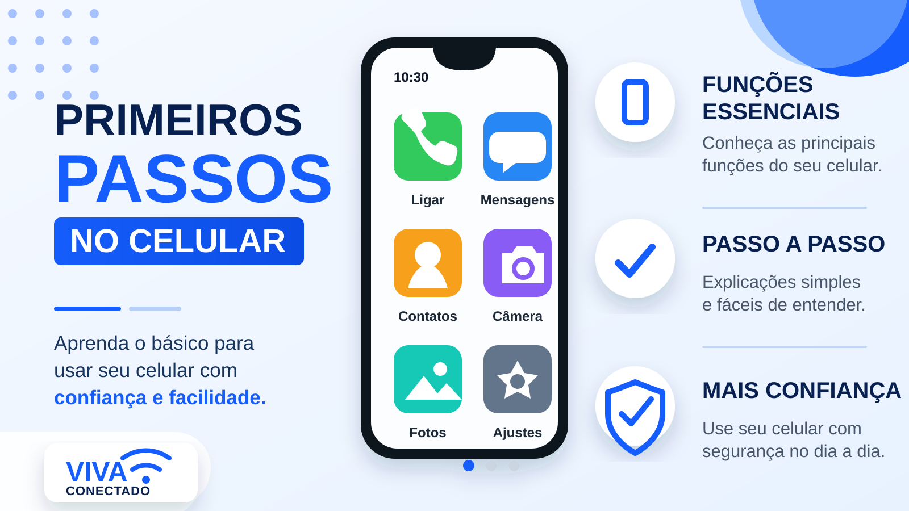

Como Não Cair em Golpes Digitais
Assista ao vídeo com orientações simples para reconhecer golpes digitais e proteger seus dados.
Conteúdos práticos para usar celular, internet, serviços digitais e redes sociais com mais segurança.

Escolha um tema, avance no seu ritmo e marque o que você já concluiu.
Aprenda a reconhecer sinais de fraude, desconfiar de mensagens suspeitas e proteger seus dados antes de clicar em links ou informar senhas.
Assista ao vídeo com orientações simples para reconhecer golpes digitais e proteger seus dados.
Aprenda o básico com imagens, explicações curtas e exemplos fáceis de seguir.

Primeiros passos no celular Assista no YouTubeConheça os botões principais, a tela inicial e o que fazer quando algo sumir da tela.
Entenda cada botão com imagem ampliada, legenda objetiva e um exemplo prático.
Veja como abrir o navegador, pesquisar e identificar sinais básicos de segurança.
Organize em etapas curtas: criar conta, entrar, enviar mensagem e reconhecer anexos.
Veja como acessar serviços importantes com mais autonomia e segurança.
Aprenda onde entrar no aplicativo, quais dados são necessários e quais cuidados tomar antes de informar CPF e senha.
Entenda onde ver saldo, pagar contas e quais alertas devem chamar atenção.
Aprenda a pesquisar endereços, criar rotas e conferir sua localização atual.
Use redes sociais e aplicativos de mensagens com mais clareza, privacidade e segurança.
Aprenda a enviar mensagens, áudios e fotos, além de reconhecer sinais de golpe.
Veja o essencial para abrir o perfil, seguir pessoas e ajustar a privacidade.
Aprenda a pesquisar vídeos, ajustar o volume e escolher conteúdos confiáveis.